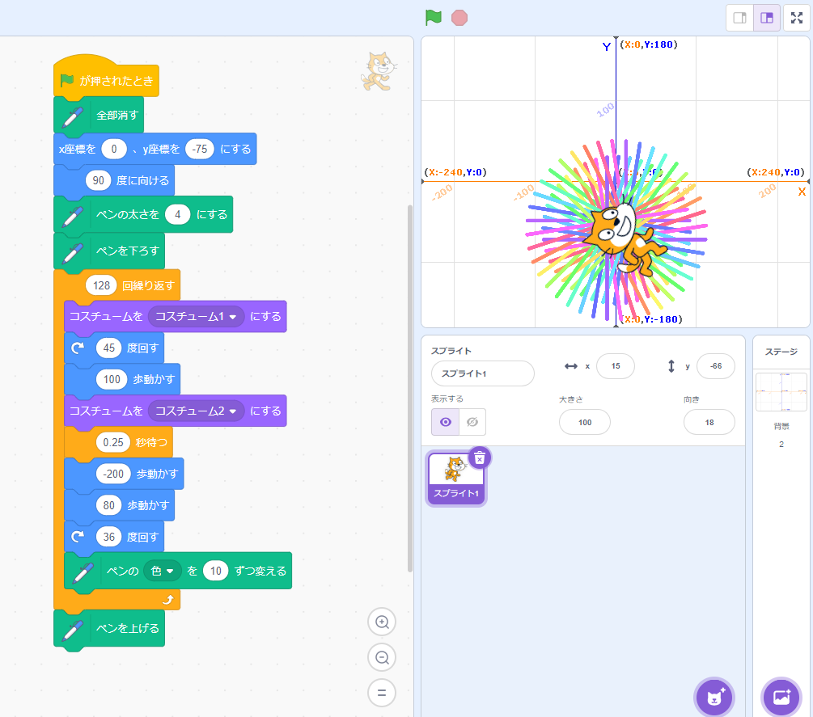
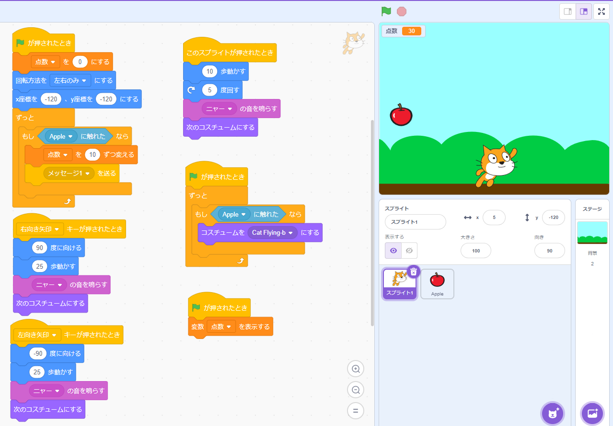

1週目のレポート ： 公大高専１年実習I-1
4b班29番 Nasuwo
第1週目
1-1 サイエンスアート

1.内容
スクラッチを使って、猫の動きに合わせて線を書くプログラムを制作した。プログラムは、猫の移動・移動に併せて線を引く・線の色を変える・移動を繰り返す・枠外へ出ないようにする、などに命令を一つずつ分解して入力を行った。
2.感想
線を描きながら角度を変えて移動する操作を自分で絵に描いて仕組みを理解することは簡単だが、いざ言語化するとなると思い通りにならないことが多かった。
1-2 ゲーム

1.内容
スクラッチを使って、上から落ちるリンゴを拾うゲームを制作した。変数を利用して、得点のカウントをしたり、乱数生成でリンゴが落ちてくる速さを変えた。
2.感想
比較的手軽にプログラミングの感覚を体験できた。ブロックプログラミングだけでもできることの幅は広く、自分で他の人の作品を参考にしたりしてより理解を深めると、楽しく学ぶことができた。
1-3 ホームページ作成
私のホームページ
1.内容
予め用意されたホームページを表示するHTMLのテキスト部分を書き換え、自己紹介ホームページを作成した。HTMLの特性を学んだ。
2.感想
大まかなHTMLの仕組みを理解できた。
各ページへのリンク
1週目のレポート
2週目のレポート
3週目のレポート
私のホームページ